Report
Response Time timelines
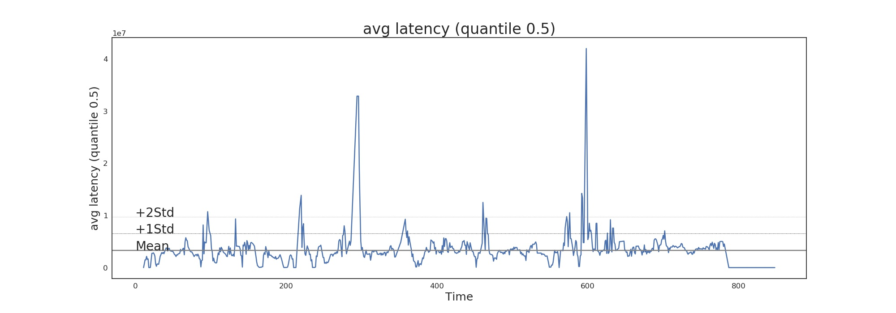
Inner state variables timeline
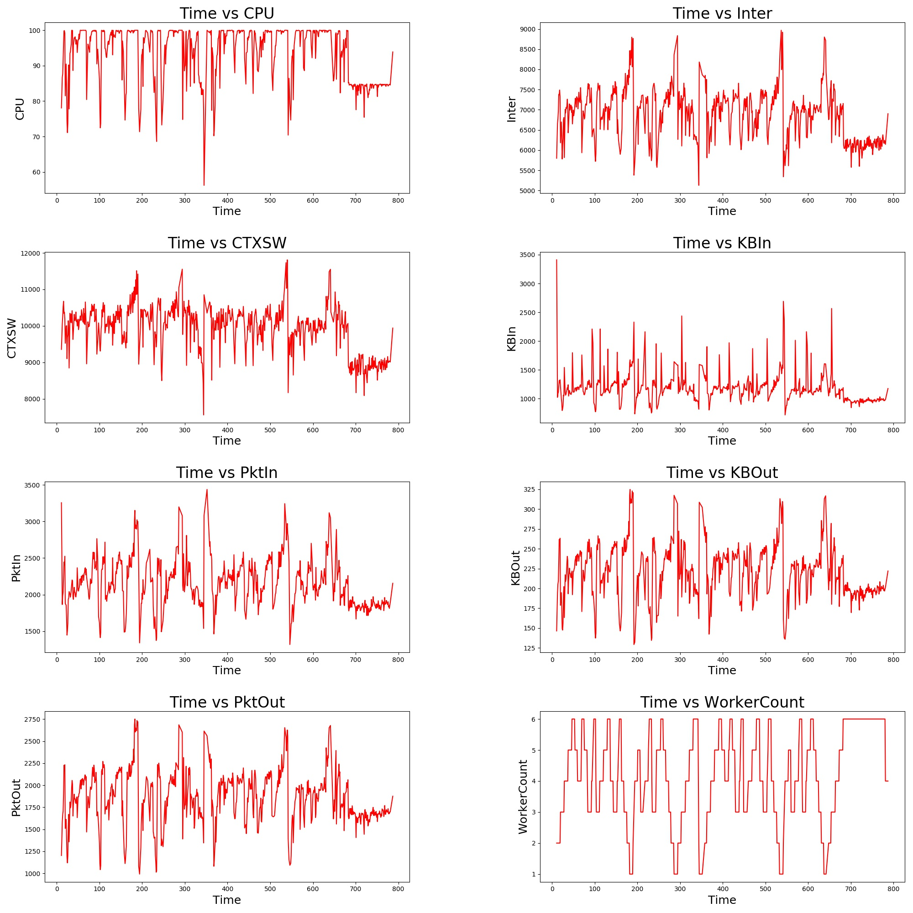
Inner State Variable against Response Time

Measured Response Time against Predicted Response Time by Neural Network (set All)
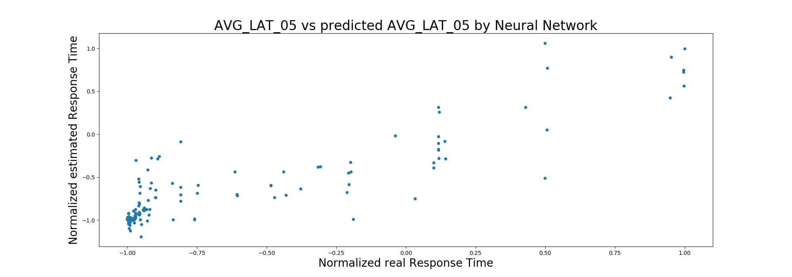
Plot measured Response Time and predicted Response Time by Neural Network normalized (set All)

Plot measured Response Time and predicted Response Time by Neural Network de-normalized (set All)
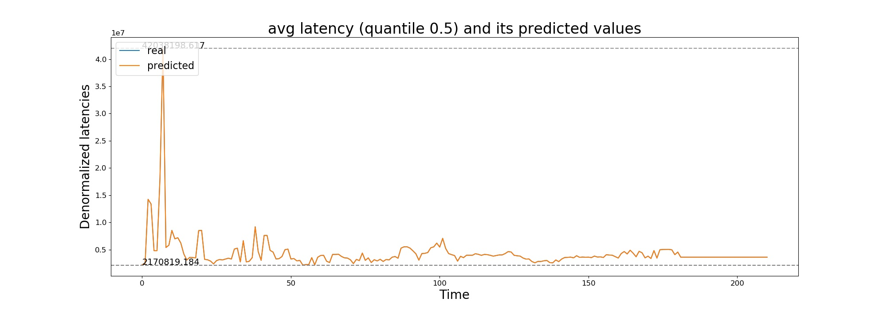
What would be the metrics values after scaling vs Real values
|
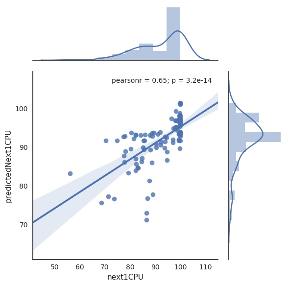
|
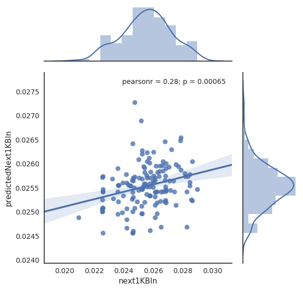
|
|
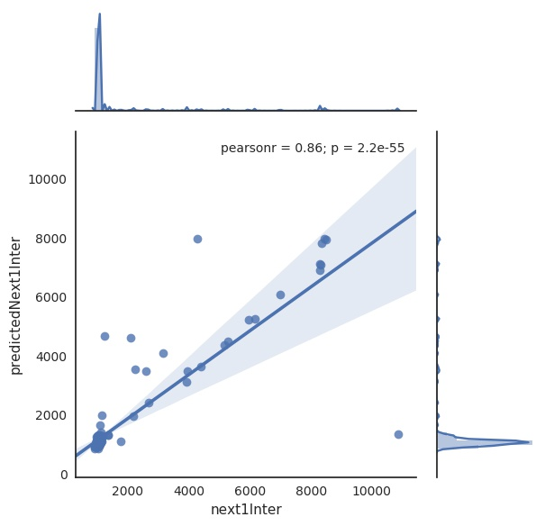
|
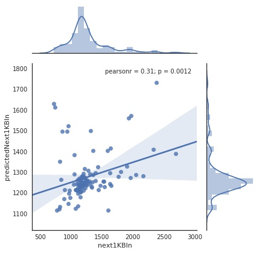
|

|
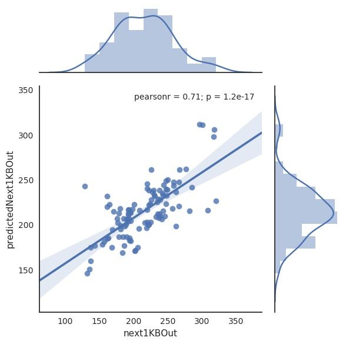
|
Estimated Response Time if add different numbers of resources
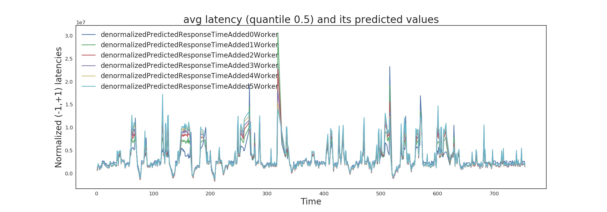
Response Time and proposed number of additional resources on Test Set
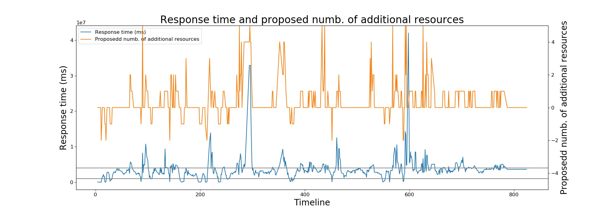
Predicted Response Time and proposed number of additional resources on Test Set
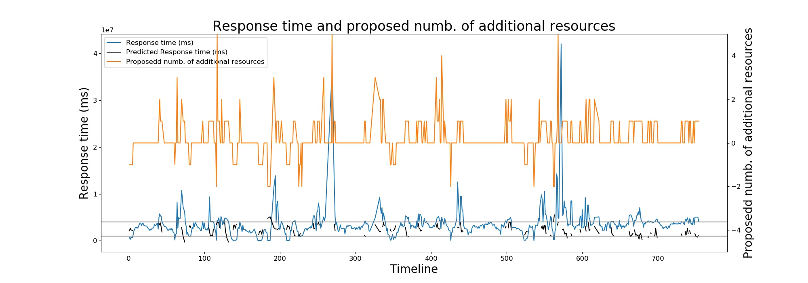